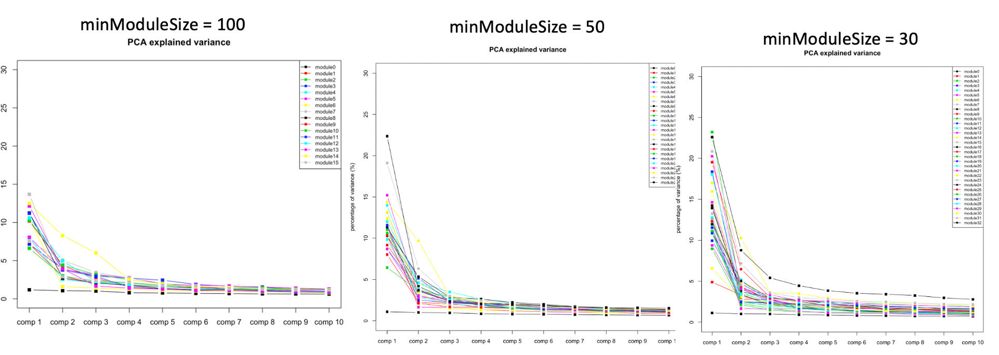
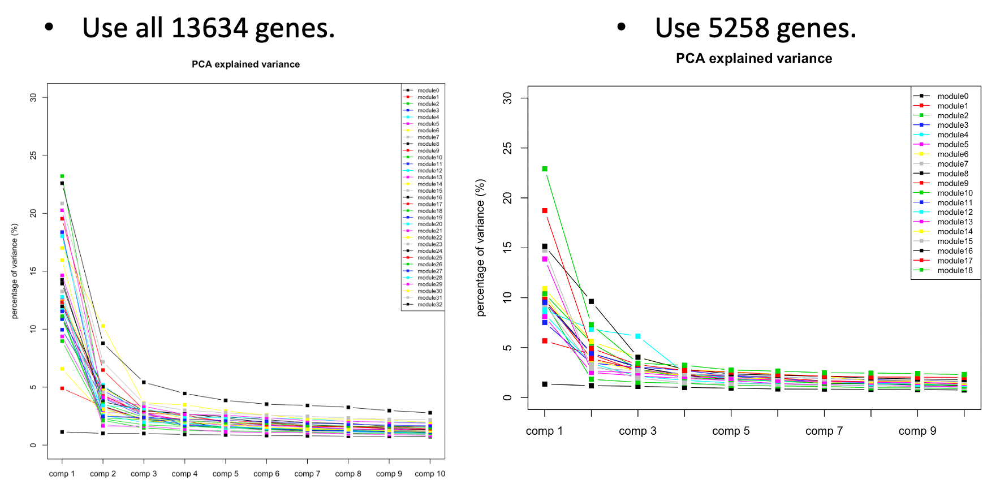
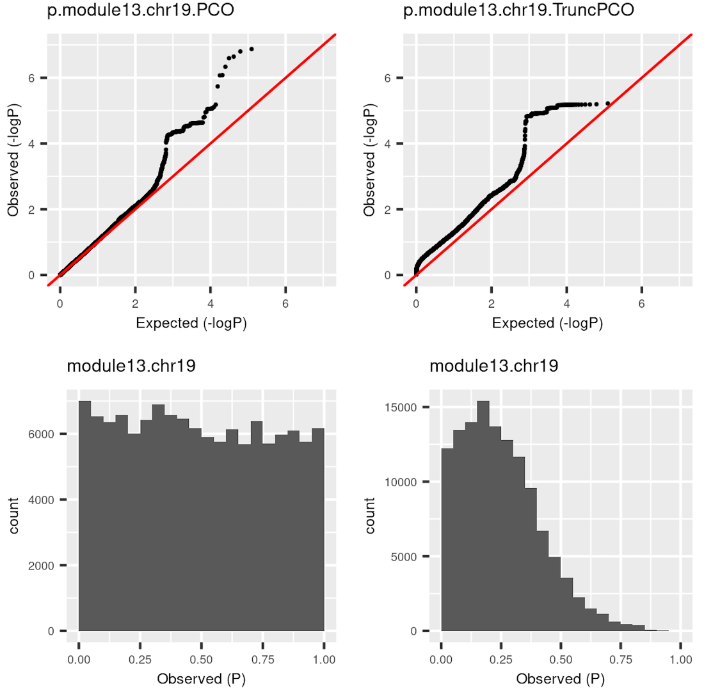
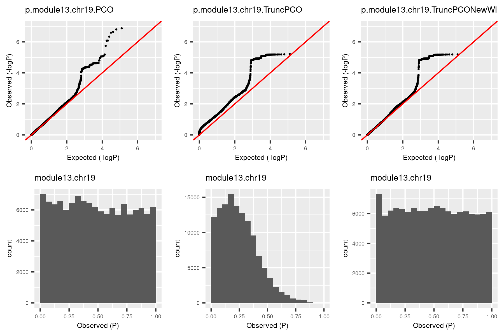
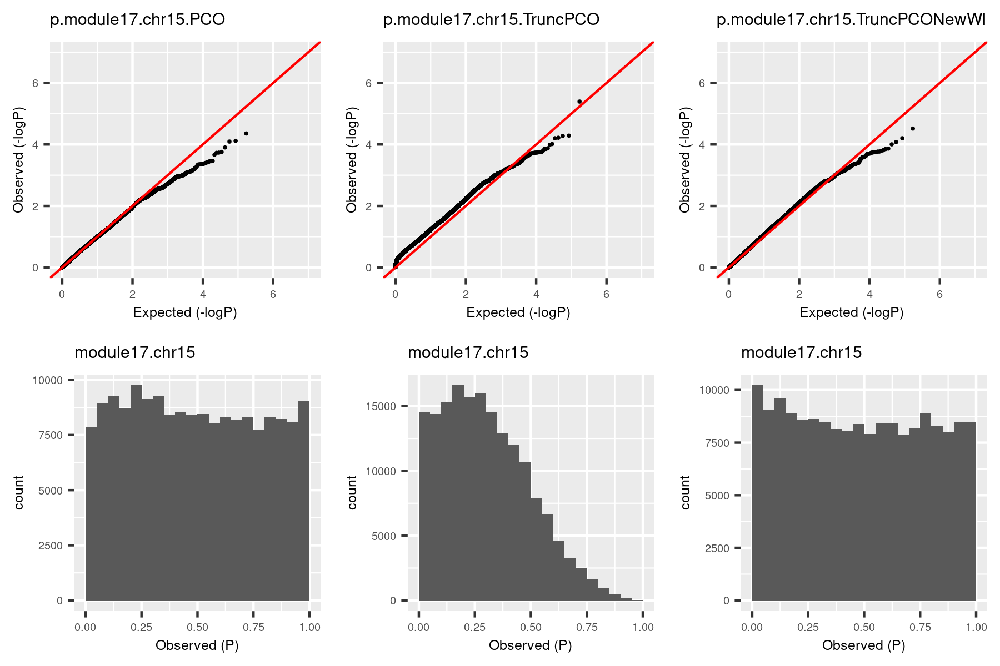
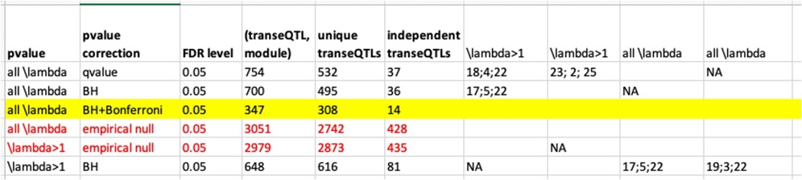

Last updated: 2020-11-05
Checks: 6 1
Knit directory: GradLog/
This reproducible R Markdown analysis was created with workflowr (version 1.6.2). The Checks tab describes the reproducibility checks that were applied when the results were created. The Past versions tab lists the development history.
The R Markdown file has unstaged changes. To know which version of the R Markdown file created these results, you’ll want to first commit it to the Git repo. If you’re still working on the analysis, you can ignore this warning. When you’re finished, you can run wflow_publish to commit the R Markdown file and build the HTML.
Great job! The global environment was empty. Objects defined in the global environment can affect the analysis in your R Markdown file in unknown ways. For reproduciblity it’s best to always run the code in an empty environment.
The command set.seed(20201014) was run prior to running the code in the R Markdown file. Setting a seed ensures that any results that rely on randomness, e.g. subsampling or permutations, are reproducible.
Great job! Recording the operating system, R version, and package versions is critical for reproducibility.
Nice! There were no cached chunks for this analysis, so you can be confident that you successfully produced the results during this run.
Great job! Using relative paths to the files within your workflowr project makes it easier to run your code on other machines.
Great! You are using Git for version control. Tracking code development and connecting the code version to the results is critical for reproducibility.
The results in this page were generated with repository version 5bc34ec. See the Past versions tab to see a history of the changes made to the R Markdown and HTML files.
Note that you need to be careful to ensure that all relevant files for the analysis have been committed to Git prior to generating the results (you can use wflow_publish or wflow_git_commit). workflowr only checks the R Markdown file, but you know if there are other scripts or data files that it depends on. Below is the status of the Git repository when the results were generated:
Ignored files:
Ignored: .DS_Store
Ignored: .Rhistory
Ignored: .Rproj.user/
Ignored: analysis/.DS_Store
Ignored: code/.DS_Store
Ignored: data/.DS_Store
Ignored: output/.DS_Store
Unstaged changes:
Modified: analysis/Log.Rmd
Note that any generated files, e.g. HTML, png, CSS, etc., are not included in this status report because it is ok for generated content to have uncommitted changes.
These are the previous versions of the repository in which changes were made to the R Markdown (analysis/Log.Rmd) and HTML (docs/Log.html) files. If you’ve configured a remote Git repository (see ?wflow_git_remote), click on the hyperlinks in the table below to view the files as they were in that past version.
| File | Version | Author | Date | Message |
|---|---|---|---|---|
| Rmd | 5bc34ec | Lili Wang | 2020-11-03 | Build site. |
| html | 5bc34ec | Lili Wang | 2020-11-03 | Build site. |
| Rmd | 8fe4184 | Lili Wang | 2020-11-03 | Build site. |
| html | 8fe4184 | Lili Wang | 2020-11-03 | Build site. |
minModuleSize=30 in WGCNA for TCGA?There are three reasons why I set the minimum number of genes in modules to be 30.
1. DGN used this setting.
At first, we looked at the variance explained by the top three PC of each modules under different settings, i.e. minModuleSize=100, 50, 30. We found that under setting of 30, the top three PC’s explained more variance, so we tended to use 30.

| Version | Author | Date |
|---|---|---|
| 8fe4184 | Lili Wang | 2020-11-03 |
The above plots used all 13634 genes without removing any poorly mapped genes. Next, I removed the poorly mapped genes, with 5258 genes left. I used 30 to cluster these 5258 genes and resulted in 18 modules. We then looked at the explained variance and found nothing seemed wrong. So we decided to use 30 for WGCNA and these 18 modules for downstream analysis.

| Version | Author | Date |
|---|---|---|
| 8fe4184 | Lili Wang | 2020-11-03 |
2. 30 is the default module size in WGCNA tutorial, and also used by the elife paper.
WGCNA tutorial used 30 as default. The elife method also used the default parameters. (Correction: elife method used the default parameters in the R package, where minClusterSize = 20.)
3. I tried other parameters, e.g. 100. 50, which both increase the unclassified genes.
| minModuleSize | Num.unclassified.genes | Num.modules | Max.num.genes |
|---|---|---|---|
| 100 | 5247 | 4 | 1972 |
| 50 | 3251 | 33 | 397 |
| 30 | 2908 | 57 | 356 |
| 20 | 2813 | 81 | 326 |
Here is the complete enrichment result.
| source | term_name | sig_module | p_adjusted |
|---|---|---|---|
| KEGG | ErbB signaling pathway | 21 | 0.008964903 |
| KEGG | Neuroactive ligand-receptor interaction | 3 | 0.015524997 |
| KEGG | Mucin type O-glycan biosynthesis | 20 | 0.016931426 |
| KEGG | Human papillomavirus infection | 2 | 0.019400355 |
| KEGG | Prolactin signaling pathway | 2 | 0.041320205 |
| KEGG | Cocaine addiction | 2;26 | 0.04269822;0.049447144 |
| KEGG | PI3K-Akt signaling pathway | 21 | 0.048894331 |
ErbB signaling pathway: "ErbB family members and some of their ligands are often over-expressed, amplified, or mutated in many forms of cancer, making them important therapeutic targets. For example, researchers have found EGFR to be amplified and/or mutated in gliomas and NSCLC while ErbB2 amplifications are seen in breast, ovarian, bladder, NSCLC, as well as several other tumor types. [source]
Neuroactive ligand-receptor interaction:
Mucin type O-glycan biosynthesis: “Changes in mucin-type O-linked glycosylation are seen in over 90% of breast cancers” [source] [source]
Human papillomavirus infection: “We demonstrated that HPV is associated with breast cancer development, although the role of HPV in breast cancers is still questionable and further research is required to investigate, in more detail, the role of HPV infection in breast cancer.” [source]
Prolactin signaling pathway: “elevated PRL levels are correlated with increased breast cancer risk and metastasis” “In vitro studies have indicated a role for PRL in breast cancer proliferation and survival.” [source]
Cocaine addiction: ???
PI3K-Akt signaling pathway: “PI3K/Akt signaling pathway is key in the development of BC” (breast cancer) [source]
I was doubting that TruncPCO (using only \(\lambda>1\)) code may have bugs because of the following weird qqplot and histogram of pvalues.

Rows are qqplot and histogram of pvalues. These pvalues are observed pvalues rather than null pvalues. Left column is for standard PCO (using all \(\lambda\)’s); right is for TruncPCO. I thought TruncPCO is weird because a histogram of pvalues shouldn’t be as skewed as the lower right one. This skewed plot means pvalues by TruncPCO are overall smaller than PCO. We thought this may be due to LD among snps, i.e. the tests are not independent. However, even with the LD complication, the histogram should be approximately flat as in the lower left plot, where the tests are not independent either.
So I looked into the code for TruncPCO and see if there are bugs I didn’t notice. (This paragraph explains what the bug is. See the histogram by the debugged code in next paragraph.) PCO uses the minimum pvalue of six tests as the test statistic, i.e. \[T_{PCO}=min(p_{PCMinP}, p_{PCFisher}, p_{PCLC}, p_{WI}, p_{Wald}, p_{VC})\]
Then use a inverse normal distribution to calculate pvalue of \(T_{PCO}\). So the key step is to compute the six pvalues. The bug happens in the step of computing \(p_{WI}\). The test statistic for this pvalus is, \[T_{WI}=\sum_{k=1}^K {z_k^2} = \sum_{k=1}^K {PC_k^2}=\sum_{k=1}^K {\lambda_k \chi_{1k}^2}\] ,where \(K\) is number of all PC’s of expression matrix, \(PC_k=u_k^Tz \sim N(0, \lambda_k)\), \(u_k\) is k-th eigenvector with eigenvalue \(\lambda_k\); \(z\) is zscore vector for one snp to \(K\) genes, \(\chi_{1k}\) is chi-square distribution with DF 1. If we only use \(\lambda>1\) for TruncPCO, i.e. \(T_{WI}^{Trunc}=\sum_{k=1}^{k_0} {PC_k^2}=\sum_{k=1}^{k_0} {\lambda_k \chi_{1k}^2}\), what I only need to do is to subset \(\lambda\)’s and \(PC_k\)’s. That is what I did for other five tests. However, in the original PCO package, \(T_{WI}\) is calculated using \(\sum_{k=1}^K {z_k^2}\) and I should have changed \(z_k\)’s to \(PC_k\)’s. But I missed this. So, \(T_{WI}\) actually used all \(K\) \(z_k\)’s, and it’s larger than the real \(T_{WI}^{Trunc}\), therefore the pvalue is smaller than the real \(p_{WI}^{Trunc}\). That is why in the above plot, TruncPCO has many small pvalues and its histogram skews to the left.
So I used the debuged code and re-computed pvalues for the same (module, chr). The result is in the third column.

The histogram became approximately flat. For this (module13, chr19), there seems to be some signals. Next, I give another example (module, chr), where there seems no signals.

The histogram by the debugged TruncPCO is still almost flat in this cese, which makes sense.
Now I have the updated pvalues. Next, I rerun TruncPCO for the null zscore, and use the null p’s to adjust for these updated pvalues. Then see how many snps are significant (\(p_{adj}<\frac{0.05}{18\times22}\)). I do this because I want to see how are the signals by this debugged TruncPCO compared with those by the previous TruncPCO. For now, I checked for the above two (module, chr) and the signals are almost the same.
From now on, I will use this correct version of TruncPCO to compute p’s for other datasets and update p’s for datasets I’ve analyzed.
So far, the way we use to adjust p is to permute samples once, calculate null z, then null p, then using this null p distribution to adjust the observe p’s. This one-time permutation procedure should work. We do the permutation once because multiple permutation is computation-time heavy. So can we use tensorQTL to make permutation faster?
As far as I understand, tensorQTL is like FastQTL, which does fast permutation to provide the adjusted minimum pvalues for each gene. This is gene-level adjustment, not the snp-level adjustment as we want. So we can’t have more faster permutations by tensorQTL.
To see how stable the signals are, I do another round of permutation for the above two (module, chr). Here I use TruncPCO for pvalues and empirical null for p adjustment. The following table gives the results.
| example | oldTruncPCO.perm.1 | TruncPCO.perm.1 | TruncPCO.perm.2 |
|---|---|---|---|
| (module13,chr19) | 157 | 159 | 155 |
| (module17,chr15) | 1 | 0 | 1 |
To make it clear, the following table is for notations of different methods.
| data | PCO | TruncPCO.old | TruncPCO |
|---|---|---|---|
| observe | p.PCO | NA | p.TruncPCO |
| null | p.null.PCO | NA | p.null.TruncPCO |

R version 3.6.3 (2020-02-29)
Platform: x86_64-apple-darwin15.6.0 (64-bit)
Running under: macOS Catalina 10.15.6
Matrix products: default
BLAS: /Library/Frameworks/R.framework/Versions/3.6/Resources/lib/libRblas.0.dylib
LAPACK: /Library/Frameworks/R.framework/Versions/3.6/Resources/lib/libRlapack.dylib
locale:
[1] en_US.UTF-8/en_US.UTF-8/en_US.UTF-8/C/en_US.UTF-8/en_US.UTF-8
attached base packages:
[1] stats graphics grDevices utils datasets methods base
loaded via a namespace (and not attached):
[1] workflowr_1.6.2 Rcpp_1.0.4 rprojroot_1.3-2 digest_0.6.25
[5] later_1.0.0 R6_2.4.1 backports_1.1.5 git2r_0.27.1
[9] magrittr_1.5 evaluate_0.14 highr_0.8 stringi_1.4.6
[13] rlang_0.4.7 fs_1.3.2 promises_1.1.0 whisker_0.4
[17] rmarkdown_2.1 tools_3.6.3 stringr_1.4.0 glue_1.3.2
[21] httpuv_1.5.2 xfun_0.12 yaml_2.2.1 compiler_3.6.3
[25] htmltools_0.4.0 knitr_1.28